易潔寶® 178mat・內部轉型提案
從「賣一塊地墊」，走向「賣一個永遠乾淨、安全、有數據可以證明的入口」。
一頁摘要
把 IoT 感測做進我們最熟悉的玉山 ES302，再加上每月收費的 Alishan Care 服務。地墊照樣賣，從此每個月都有經常性收入，而且每個月都跟客戶保持接觸。
第 1 章
易潔寶是台灣最早自製鋁合金除泥地墊的廠商之一。產品用台灣的山命名；這次的轉型，我們叫它「阿里山」。
| 年份 | 事件 |
|---|---|
| 2002 | 引進鋁合金除泥地墊，同年第一塊自製產品出廠 |
| 2004 | 設廠量產，跟設計師、建築師一起推廣 |
| 2005 | 註冊「易潔寶®」商標 |
| 2019 | 玉山 ES302 通過 SGS 試驗（HK-19-04861），抗壓 15,000 kgf |
| 2026 | Project Alishan：智慧化、服務化 |
| 系列 | 說明 |
|---|---|
| 玉山 ES302 | 主力產品。6063-T5 鋁擠型，鋁條寬 30 mm、高 18 mm；墊高 23 mm、凹槽 20 mm；重量級，適合每日 2,000 人次以上 |
| 雪山 SM305 | 豪宅、廠辦案例 |
| 象山 SS103 | 1 cm 平鋪式，不用開挖 |
| 下一座山：阿里山 | 不是新的鋁條，而是讓每一座山都「會說話」：感測、雲端、服務 |
桃園機場第一、二航廈、林口長庚質子治療中心、中國醫大附醫、奇美博物館、海洋科技博物館、台中科博館、台南／路竹／中科的科技廠辦、阿里山飯店、中和環球購物中心；建商有遠雄、冠德、國建、鄉林、總太、麗寶等。官網上有 400 多篇施工案例。
第 2 章
客戶要買的不再只是一塊地墊，而是一個「交代得過去」的入口：物管要報表，ESG 要紀錄，業主怕有人滑倒要理賠，清潔人力又越來越難找。
| 買家會問的問題 | |
|---|---|
| 以前 | 「一米多少錢？」「多厚？」「要多久可以做好？」 |
| 現在 | 「能不能證明有每週維護？」「下雨天會不會有人滑倒？」「能不能少派一個人巡邏？」「有沒有報表可以給董事會看？」 |
第 3 章
同一塊玉山 ES302，把感測器藏進我們本來就有的結構裡。以下 3D 圖依 ES302 規格表和 4-BLOCK 施工大樣圖的真實尺寸建模。
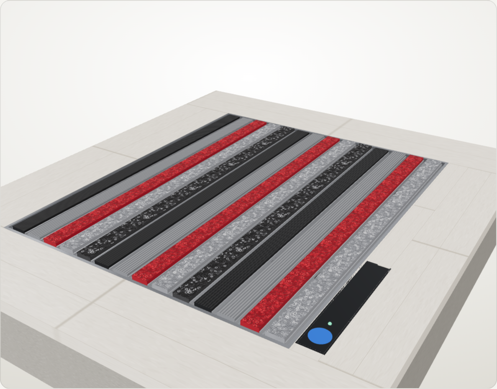
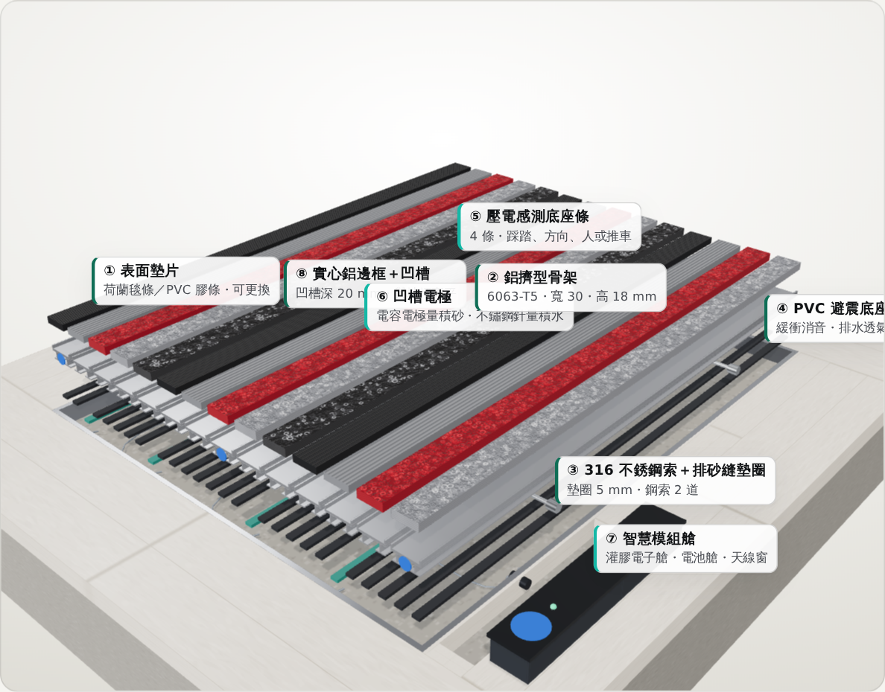
第 4 章
感測器是什麼、放在哪裡、怎麼用、為什麼撐得住。這一章是整份提案技術上最關鍵的部分。
| 感測器 | 量什麼 | 放在哪 | 成熟度 |
|---|---|---|---|
| ① 壓電感測底座條 | 踩踏、方向、人或推車、沖洗 | 入口側底座，每 3–4 支鋁條一條 | 成熟（道路、步道都有前例） |
| ② 積砂模型＋清坑秤重 | 凹槽積砂量（主力） | 雲端 | 第 0 階段就能上線 |
| ③ 叉指電容電極條 | 0–5 mm 薄層積砂（輔助） | 鋁條兩腳之間的隧道 | 第 1 階段驗證 |
| ④ 積水電極 | 積水、排水堵塞、濕滑 | 凹槽中段 | 簡單、成熟 |
| ⑤ NFC 標籤 | 毯條更換、到場紀錄 | 鋁條端頭、模組艙蓋 | 成熟 |
| ⑥ 模組艙 | 電池、電路、無線 | 邊框端部、走道外側 | 參考停車格感測器 |
| ＋ 氣象署雨量 | 有沒有下雨 | 雲端（免費開放資料） | 每 10 分鐘更新 |
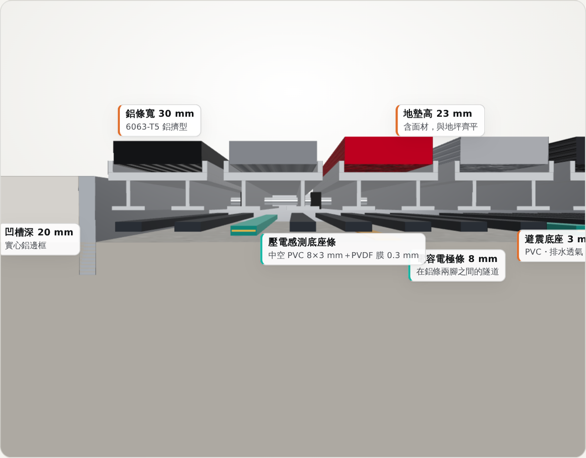
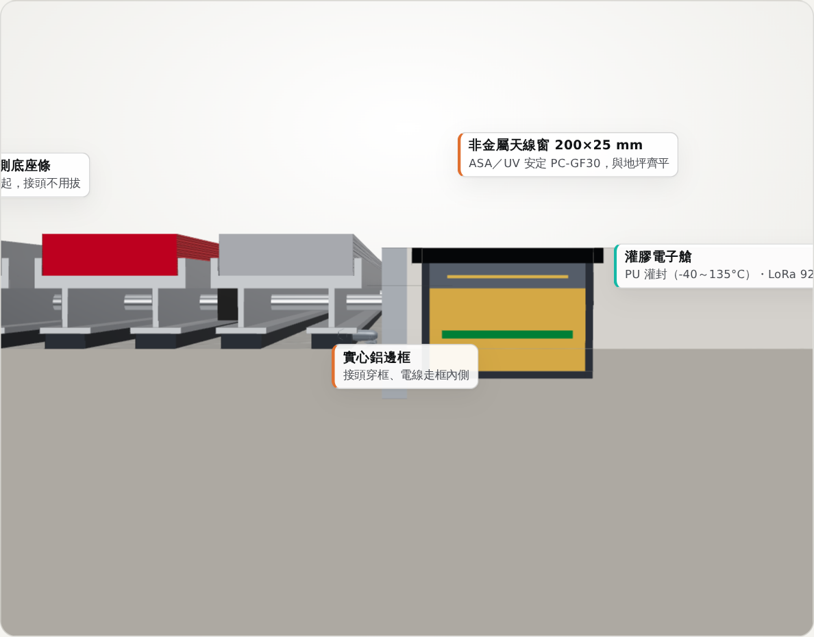
外形跟原本的 PVC 避震底座一樣（8 × 3 mm）的中空 PVC 條，中間滑入一片約 0.3 mm 的 PVDF 壓電膜（28 µm 膜加上 PET 保護層）。
8 mm 寬、300 mm 長、0.2 mm 厚的軟性電路板（聚醯亞胺），上面有兩組像梳子一樣交錯的銅指，背面有一層屏蔽。
不是硬體，是一條公式：積砂 ≈ 人次 × 天候係數 × 地墊攔截率 × 案場係數 k。
三根 316 不鏽鋼針，高度分別是 1、5、10 mm，立在凹槽中段。
硬幣大小、可以貼在金屬上的 NFC 標籤（NTAG216，一顆約 NT$45）。模組艙蓋上一顆（代表案場），鋁條端頭各一顆（代表哪一列）。
200 × 34 mm 的密封盒，嵌在鋁邊框旁邊、跟地坪齊平；上蓋是非金屬天線窗。
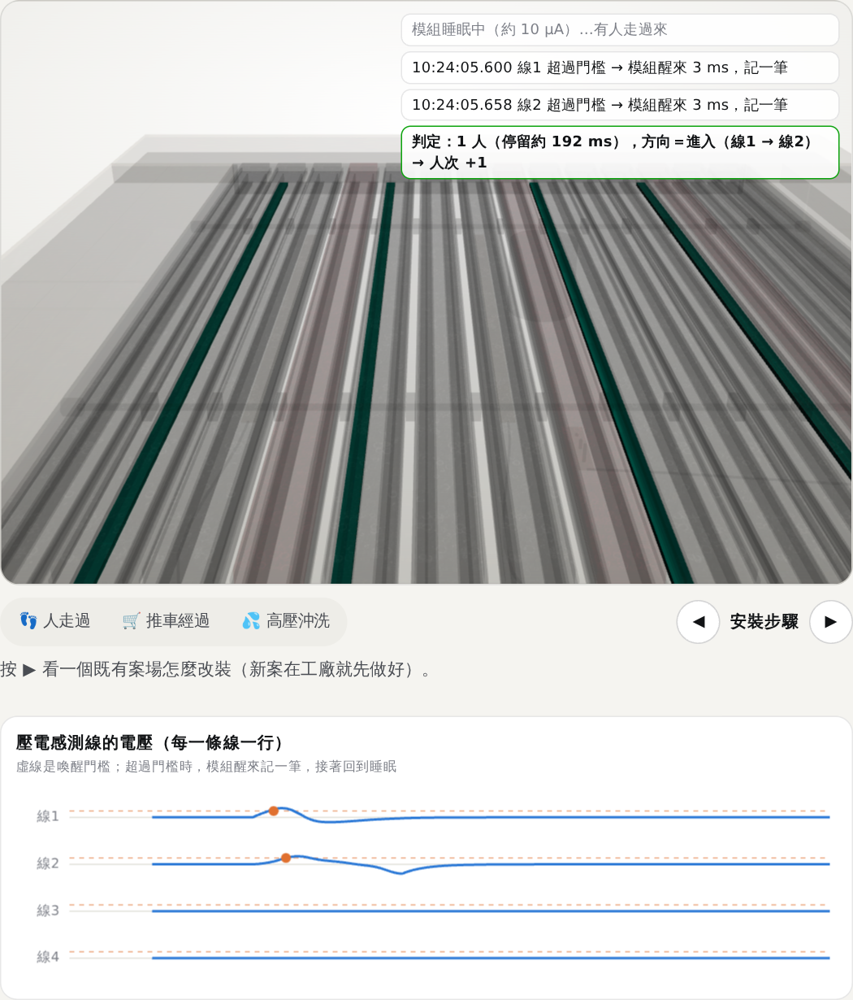
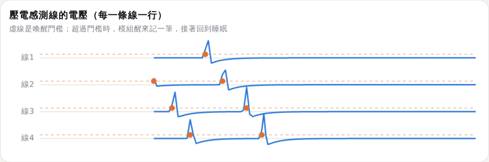
波形是依物理特性模擬的示意，實際電壓要在第 0 階段量測。
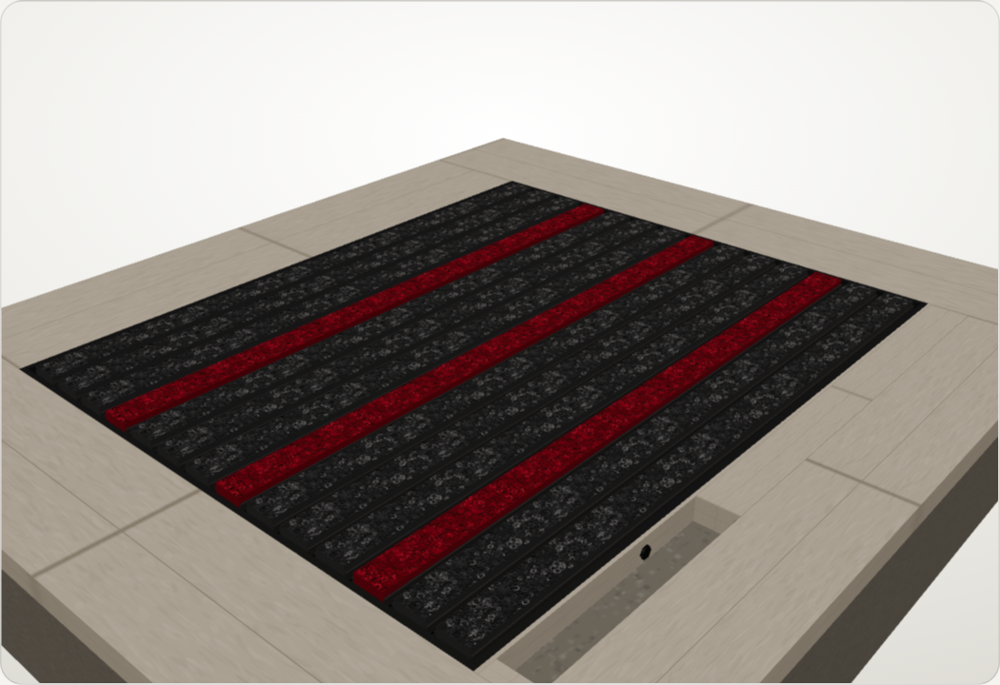
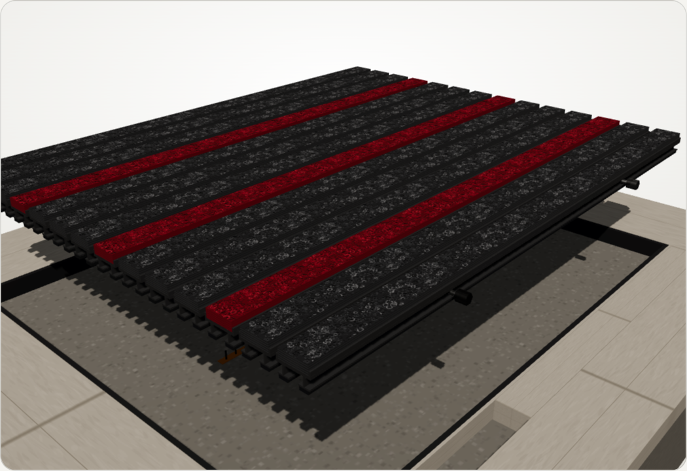
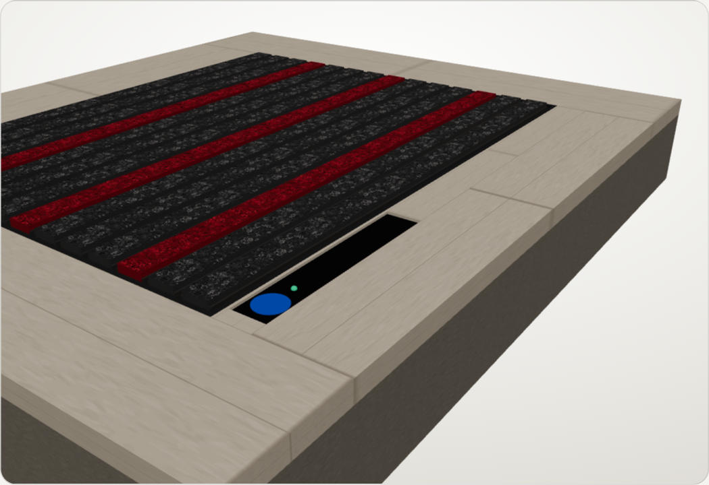
| 情況 | 對策 |
|---|---|
| 泥沙堆積 | 積砂以模型為主；電極只在乾燥時取值；清坑時擦拭 |
| 積水、颱風淹水 | IP68（1.5 m、7 天）；電池艙獨立；接頭在乾區 |
| 高壓沖洗 | IP69K；壓電判斷為「清洗模式」，不計數 |
| 清潔劑、酸鹼 | 316 不鏽鋼、PU 灌膠、聚醯亞胺；陽極處理 ≥ 18 µm 並封孔 |
| 日曬 70°C、UV | 全部以 85°C 設計；天線窗用 ASA 或 UV 安定 PC |
| 曬熱後突然下雨 | 壓電熱電效應會產生假訊號 → 1.7 Hz 高通濾波＋溫度變化率判斷 |
| 海邊鹽分 | 316 螺絲加尼龍墊隔開鋁，避免電蝕 |
| 推車、車輛重壓 | 感測條在鋁條下面受保護，只承受底座原本就承受的力 |
| 掀地墊清坑 | 40 cm 維修迴圈；IP68 快拆接頭 |
| 老鼠、昆蟲 | 全程不鏽鋼編織套管 |
| 偷竊、破壞 | A4 不鏽鋼防盜螺絲；模組與地坪齊平、不顯眼 |
| 靜電、突波 | TVS＋限流電阻；壓電膜外層接地，形成自屏蔽 |
| 領域 | 他們怎麼做 | 關鍵數字 | 我們學到什麼 |
|---|---|---|---|
| 道路車軸計數 | TE RoadTrax BL 壓電線埋進路面溝槽，環氧樹脂灌封 | 1.6 × 6.6 mm；壽命 4,000 萬軸次 | 細長壓電條可以灌封埋在重壓下；要處理熱電效應 |
| 步道人流計數 | Eco-Counter SLAB 壓力板埋在步道下，兩排判方向 | IP68；電池 10 年；成群通過會少算 | 兩排判方向是成熟做法；要用影片校正 |
| 停車格感測器 | Nedap、Bosch 密封圓餅平埋在地面，被車壓過 | 鋰亞電池 5–10 年；IPx9K；耐溫 85°C | 模組艙照抄：密封、耐溫 85°C、自動校正基線 |
| 人孔、水表井 | 金屬蓋下的無線感測器 | 金屬蓋讓訊號掉 25–30 dB | 一定要開非金屬天線窗，用 920 MHz |
| 智慧地板研究 | Georgia Tech Smart Floor 量腳踩的力量曲線 | 15 人、辨識率 93% | 人和推車可以用訊號形狀分開 |
| 秤重貨架 | Amazon 貨架下 4 顆荷重元，要搭配影像 | 荷重元有潛變、溫漂 | 不直接秤砂 |
| 雨水溝泥沙 | 英國 Suffolk 郡試驗（2022） | 準確度約 70%；20 支剩 5 支 | 模型為主、電極為輔 |
| 地墊專利 | US5946368、US6406549（1997，已過期） | — | 計步、判方向是公知技術；凹槽積砂估算目前沒查到前案 |
| 項目 | 狀態 |
|---|---|
| 壓電計步、兩排判方向 | 成熟：道路、步道、專利都有前例；要實測每一步的電壓 |
| 分辨人和推車 | 研究可行：要收集自己的訊號資料 |
| 積水、濕滑 | 簡單成熟：電極加上氣象署雨量 |
| 積砂量 | 最難：模型＋清坑秤重先上線；電容電極在第 1 階段驗證；不直接秤重 |
| 天線穿出鋁框 | 要實測：第 0 階段第一週量訊號強度 |
| 電池 5 年 | 理論足夠：平均約 6–10 µA；要用功耗儀實測，並考慮 70°C 降額 |
| 耗電項目（估算） | 平均電流 |
|---|---|
| 6 顆奈安級比較器（等待踩踏） | 0.45 µA |
| MCU 深度睡眠 | 2–5 µA |
| 每天 2,000 步 × 醒來 3 ms | 約 0.35 µA |
| LoRa 每 15 分鐘上傳一次 | 約 3 µA |
| 電極每小時量一次 | < 0.1 µA |
| 合計 → ER18505（4 Ah） | 約 6–10 µA → 理論 > 10 年 |
第 5 章
人走過、下雨、積砂、通知、派工、結案，全部自動完成。以下是互動版的模擬畫面（一棟商辦、3 個入口）。
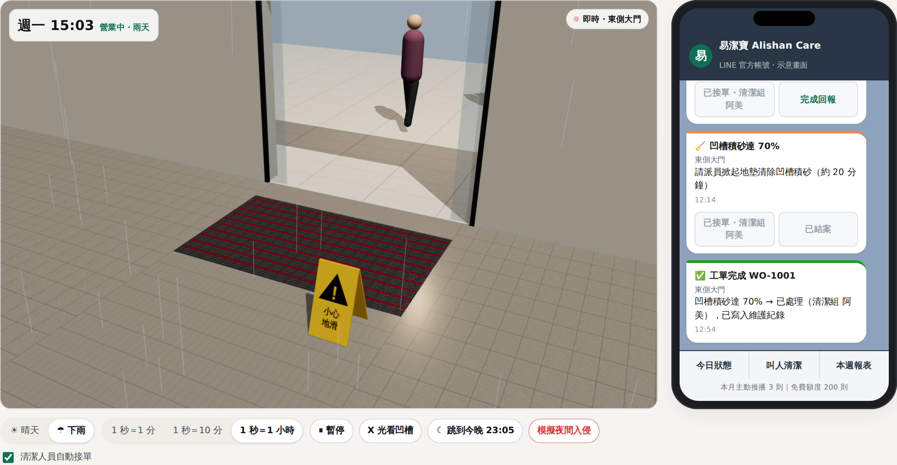
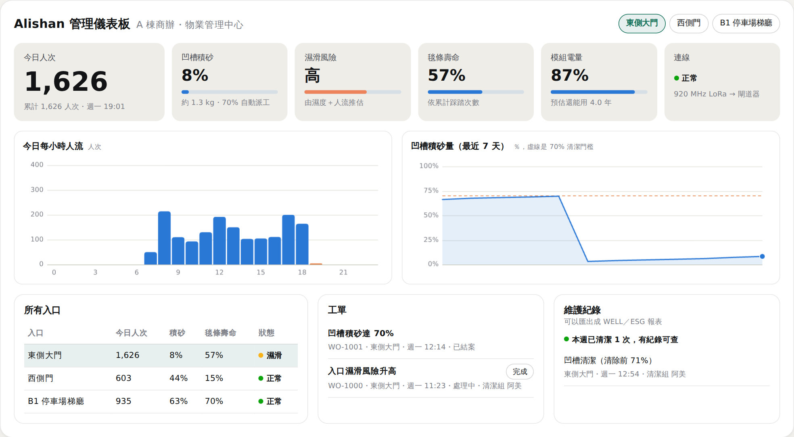
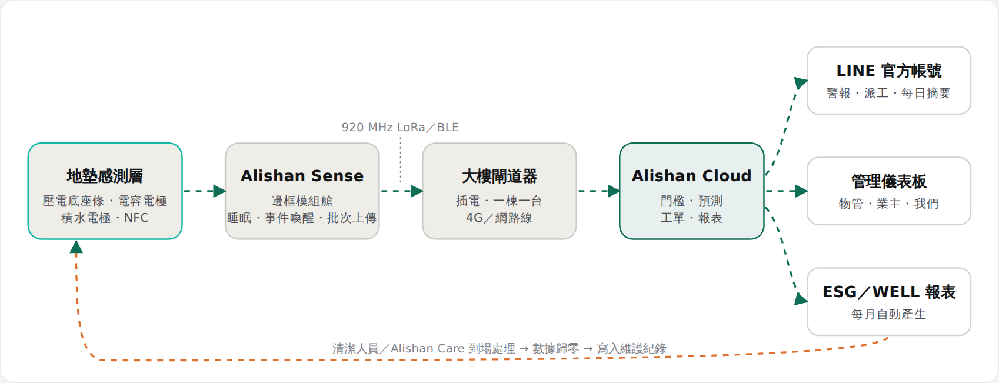
第 6 章
先花約 NT$1.5 萬、用 4 週，證明它真的會動，再決定下一步。技術、業務、資金三條線一起走；第 4 週和第 13 週各有一次由董事長做的決定點。
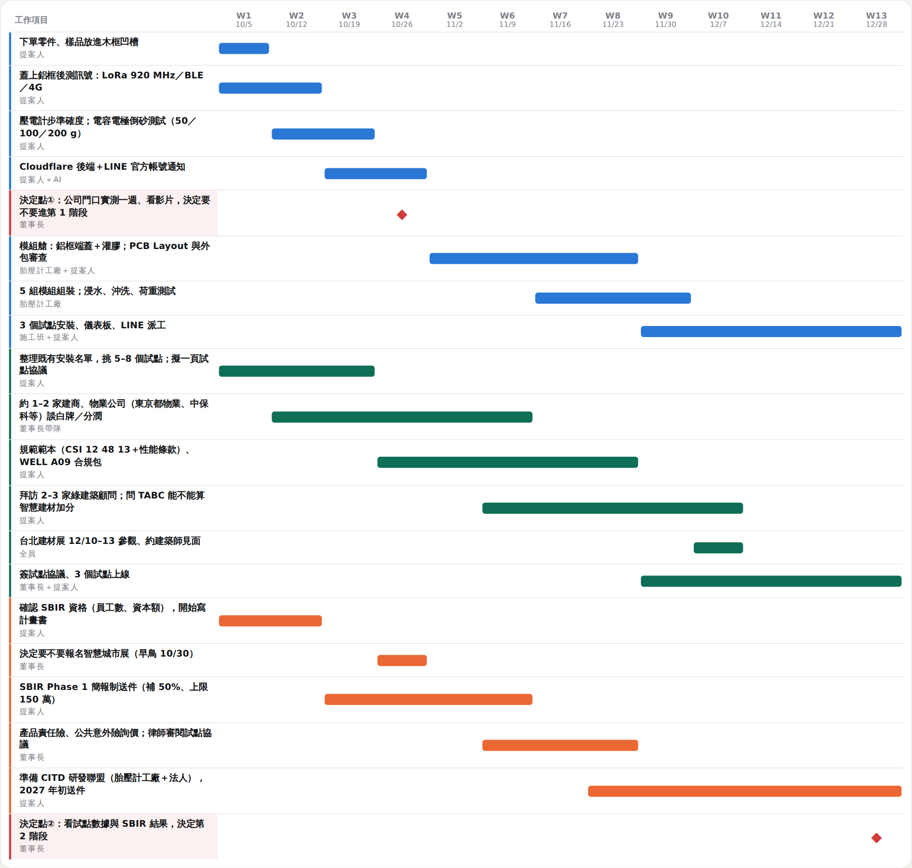
| 決定點 | 過關條件 | 沒過關時 |
|---|---|---|
| ① 第 4 週 | 計步誤差 < 5%；方向正確率 > 95%；電容電極能分辨 50 g 倒砂；蓋上鋁框後訊號穩定 | 停下來，損失約 NT$1.2–1.8 萬；或只換無線方案再測 2 週 |
| ② 第 13 週 | 3 個試點連續運作；推算電池壽命 ≥ 2 年；至少 1 家物業公司或建商願意談分潤或交屋包 | 縮小成只做改裝套件，或等 SBIR 結果 |
| ③ 第 12 個月 | 試點轉付費 ≥ 30%；每入口每月毛利 ≥ NT$1,000 | 暫停擴張，改善產品或價格 |
第 7 章
每一筆都列出來。最壞的情況，就是停在第 0 階段，損失 NT$1.2–1.8 萬。價格是 2026 年 9 月查到的台灣通路價和行情；標「查證」的有原始頁面，標「估計」的下單前要再詢價。
| 情況 | 金額 |
|---|---|
| 最壞情況：只做第 0 階段就停 | NT$1.2–1.8 萬 |
| 三個階段合計（第一年） | NT$36–94 萬 |
| 第 1＋2 階段（研發，可申請 SBIR） | NT$34–92 萬 |
| 申請 SBIR Phase 1 後，第 1＋2 階段公司自付 | NT$17–46 萬 |
目標：一片 ES302 樣品：人踩上去，手機收到 LINE；能量到 50 g 的積砂變化
| 項目 | 價格（NT$） | 來源 |
|---|---|---|
| MCU 開發板：XIAO ESP32C6 ×2、ESP32-C6-DevKitC ×1 | 1,209 | 查證 iCShop 649＋280×2 |
| PVDF 壓電膜樣品（TE DT1／SDT1 屏蔽型）×6 | 900–2,100 | 估計 element14 有售 |
| 奈安級比較器 TLV3691 ×6＋TVS、電阻 讓壓電直接喚醒 MCU | 300–600 | 估計 |
| FDC1004 電容感測模組＋叉指電極 PCB 打樣 | 800–1,500 | 估計 |
| 316 不鏽鋼電極針、SHT40（模組內密封監測） | 400–700 | 估計 |
| NFC 金屬面標籤 NTAG216 ×10 | 450–650 | 查證 shopnfc €1.29／顆 |
| 電子秤／吊秤（清坑秤砂、校正模型） | 300–800 | 估計 |
| ER14505 鋰亞電池 ×4＋超級電容（應付發射尖峰） | 1,000–1,500 | 查證 百裕 EEMB NT$178 |
| LoRa 920 MHz：Wio-SX1262 ×2＋Heltec V3（當簡易閘道） | 1,300–1,800 | 估計 |
| 防水盒、PG7 接頭、灌封膠、線材、耗材 | 1,500–3,000 | 估計 |
| Nordic PPK2 功耗量測儀（可以一直用） 推算電池壽命一定要用 | 3,500–4,500 | 估計 |
| 雲端 Cloudflare 免費方案＋LINE 官方帳號輕用量 | 0 | 查證 |
| ES302 樣品、木框凹槽（公司庫存） | 0 | 估計 |
| （選用）4G 路由器 TL-MR100＋IoT SIM | 1,535–1,735 | 查證 PChome 1,499 起；SIM 月租 35 起 |
「（選用）」項目不計入小計。
目標：5 組灌膠模組、公司門口＋2 個友好案場，連續 60 天不斷線
| 項目 | 價格（NT$） | 來源 |
|---|---|---|
| PCB 線路與 Layout 外包審查 | 10,000–20,000 | 估計 Pro360 行情 3,000–15,000／件 |
| PCB 打樣＋SMT 10 片 ×2 版次 | 5,000–10,000 | 查證 JLCPCB 開機費 US$8 起 |
| 模組零件 ×5 組（MCU、LoRa 模組、比較器、電池） | 7,500–12,500 | 估計 |
| 壓電感測底座條打樣（中空 PVC 擠型＋層壓 PVDF） 不能共擠：擠好中空條後再滑入壓電膜 | 10,000–30,000 | 估計 |
| FPC 叉指電極＋積水電極打樣 | 3,000–6,000 | 估計 |
| 鋁框端蓋模組艙 CNC＋灌膠 ×5（胎壓計工廠協助） 用自家鋁擠型，不用開塑膠模 | 2,500–7,500 | 估計 |
| 射頻／天線調校（胎壓計工廠協助；若外包） | 0–30,000 | 估計 |
| 閘道器 ×3 棟（LoRa 閘道＋4G 路由器） | 7,000–28,000 | 查證 RAK7268V2 US$154 起 |
| IoT SIM ×3 × 3 個月 | 315–720 | 查證 中華電信 LTE-M 40／月、遠傳 IoT 4G 35／月 |
| NCC 登錄（用已取得 NCC 的無線模組） | 1,500–2,100 | 查證 登錄費 1,500＋證照費 600 |
| 產品責任險＋公共意外責任險（一年） 請保經報價 | 10,000–30,000 | 估計 |
| 試點協議、個資條款請律師審閱 | 5,000–15,000 | 估計 |
| 試點安裝工時與交通（自家施工班） | 10,000–20,000 | 估計 |
| 雲端＋LINE 中用量（3 個月） | 0–3,000 | 查證 LINE 中用量 2026/11 起 NT$1,000／月 |
| （選用）NCC 完整送測（如果模組沒有 NCC） | 80,000–150,000 | 估計 審驗費 10,300＋實驗室測試費 |
「（選用）」項目不計入小計。
目標：試點轉付費 ≥ 30%，每入口每月毛利 ≥ NT$1,000
| 項目 | 價格（NT$） | 來源 |
|---|---|---|
| 模組小量生產 ×30（零件＋PCBA＋灌膠） | 60,000–120,000 | 估計 |
| 閘道器 ×10 棟 | 23,000–92,000 | 估計 |
| 韌體／硬體外包：低功耗、量產測試治具 | 80,000–200,000 | 估計 低功耗節點設計行情 8–30 萬 |
| 資安 code review（上線前一次） | 10,000–30,000 | 估計 |
| 服務人力：清坑、換毯（由現有施工班兼任） | 60,000–150,000 | 估計 |
| 行銷：案例影片、規範範本、WELL 合規包、型錄 | 30,000–80,000 | 估計 |
| 雲端＋LINE＋SIM（8 個月） | 10,000–30,000 | 估計 |
| （選用）智慧城市展 2027 小攤位 早鳥報名到 10/30 | 60,000–150,000 | 估計 |
| （選用）NCC 完整型式認證 | 80,000–150,000 | 估計 |
「（選用）」項目不計入小計。
| 計畫 | 內容 | 時機 |
|---|---|---|
| SBIR Phase 1 | 2026 年起上限 150 萬，最多補 50%；約 6 個月；簡報制、隨到隨審；送件到撥款約 4–6 個月，要先墊款 | 現在：用公司名義送件 |
| CITD 研發聯盟 | 每案上限 1,000 萬（主導廠 500 萬）；易潔寶主導＋胎壓計工廠＋法人（金屬中心或工研院）；自籌 50% 以上；要有工廠登記 | 116 年度預計 2026/12–2027/1 公告 |
| 地方型 SBIR | 多數縣市單一 100 萬、聯合 200 萬 | 通常每年 3–7 月 |
同一個研發內容不能重複請領補助，SBIR 和 CITD 的題目要切開。
| 10 入口 | 100 入口 | |
|---|---|---|
| 雲端＋LINE＋Email | 約 700 | 約 2,100 |
| 4G SIM（一棟一台閘道器） | 約 150–550 | 約 1,500–5,500 |
| 對照：月費收入 | 25,000 | 250,000 |
雲端幾乎不花錢；真正會累積的是 SIM 月租，所以一棟樓共用一台閘道器。
第 8 章
原則：軟體用 AI 自己寫（便宜、改得快）；密封、無線、量產交給胎壓計工廠（最難、出錯代價最高）；法規和保險花小錢請專家看一次。
| 要做的事 | 找誰 | 大概多少錢 | 什麼時候 |
|---|---|---|---|
| 韌體、雲端後端、儀表板、LINE 機器人 | 提案人＋AI 開發工具 | AI 工具每月約 NT$600 | 第 1 週起 |
| 模組艙密封、灌膠、IP68 測試 | 親戚的胎壓計工廠 | 小量每組約 NT$500–1,500 | 第 5 週起 |
| 無線與天線調校、量產測試治具 | 胎壓計工廠；不夠時找接案射頻工程師 | 0–3 萬 | 第 6–9 週 |
| 電路圖與 PCB Layout 審查 | 接案工程師（Pro360、Tasker） | 1–2 萬 | 第 5–6 週 |
| PCB 打樣與焊接 | JLCPCB；台灣沅橡（1 片也做）、嵌揚 | 每版 NT$2,500–5,000 | 第 6 週 |
| NCC 認證 | 先用已取得 NCC 的無線模組只做登錄；需要時找 SGS、耕興、ETC | 登錄 NT$1,500；完整送測 8–15 萬 | 第 2 階段前 |
| 4G 上網 | 中華電信、遠傳 IoT SIM | 每張每月 NT$35–80 | 第 9 週 |
| 保險 | 保險經紀人：產品責任險＋公共意外責任險 | 每年約 1–3 萬 | 試點前 |
| 試點合約、個資條款 | 往來的律師 | 0.5–1.5 萬 | 第 6–8 週 |
| 研發法人（CITD 聯盟） | 金屬中心（鋁材、結構）或工研院、資策會 | 依計畫 | 2027 年初 |
第 9 章
地墊沒有法規強制保養（電梯有），所以 Alishan Care 不能單獨賣，要綁進原本就存在的合約：物業管理合約、清潔外包合約、交屋點交文件。
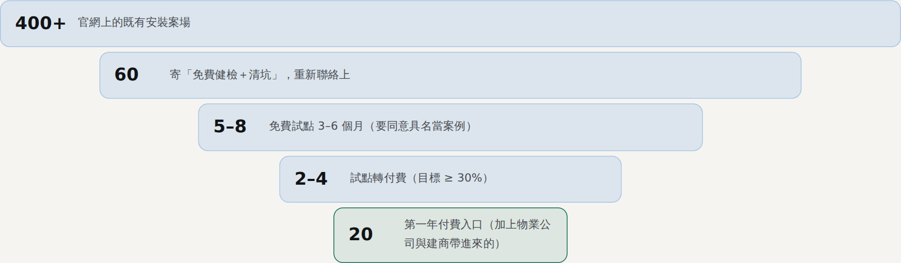
| 客群 | 誰決定 | 他在乎什麼 | 我們怎麼進去 | 多久 |
|---|---|---|---|---|
| 既有住宅社區 | 管委會、總幹事 | 管理費不漲、滑倒責任 | 透過物業公司；換算成「每戶每月約 NT$25」 | 1–3 個月 |
| 大型物業公司 | 事業開發、商品部 | 「有市場沒有人」、用科技省人力 | 白牌或共同品牌，分潤 15–30%；東京都物業一家就駐點超過 1,000 個社區 | 3–6 個月 |
| 建商（新案） | 產品企劃、工務、客服 | 交屋品質、客訴、行銷亮點 | 交屋包附「首年免費」，第 2 年轉月費 | 6–18 個月 |
| 建築師 | 設計部、規範工程師 | 沒時間寫小項規範 | 提供可以直接貼上的規範範本（CSI 12 48 13、性能條款、「或同等品」） | 寫進規範後 2–4 年 |
| 醫院 | 總務室、感控室 | 跌倒是病安指標、評鑑 | 總務室的廠商試用程序 | 3–12 個月 |
| 科技廠 | 廠務、EHS | 帶塵、工安、供應商資格 | 從既有廠區的施工窗口切入 | 6–12 個月 |
| 商辦、WELL／LEED 案 | 工務、FM、綠建築顧問 | WELL A09 入口系統、LEED 外包每週維護 | 給顧問一份「WELL A09／LEED 合規包」 | 3–9 個月 |
崇友電梯的保養約占營收 5 成，保養毛利約 46%，新梯只有約 12%。做法是新梯附免費保固，期滿轉成保養月費。電梯保養分半責（NT$2,500–3,500／月）和全責（NT$5,000–6,500／月），Alishan Care 也照這樣分級。
第 10 章
地墊照樣賣，只是多了一層服務。從一次性工程款，變成「一次＋每個月」。
| 方案 | 內容 | 建議價（試點時驗證） |
|---|---|---|
| 易潔寶 Smart（產品） | 新案出貨內建感測；舊案用改裝套件；含閘道器與第一年雲端 | 每個入口加價 NT$18,000 起 |
| Alishan Care 基本 | 監測、LINE 警報、每季清坑 | NT$1,500／入口／月 |
| Alishan Care 標準（主力） | 依積砂量派工、反應時間承諾、ESG／WELL 月報 | NT$2,500／入口／月 |
| Alishan Care 全責 | 再加上毯條依磨耗更換、年度稽核資料 | NT$4,500／入口／月 |
| Alishan Data | 人流報表／API，給商場、物管、場館 | 依案場報價 |
| 現在（傳統） | 阿里山之後 | |
|---|---|---|
| 營收 | 一次性工程款 | 工程款＋每月經常性收入 |
| 跟客戶的關係 | 完工就結束 | 每個月都有接觸 |
| 換毯條 | 客戶想到才打來（10–15 年） | 系統依磨耗預測，自動排程 |
| 競爭方式 | 很容易被比價 | 比的是服務和數據 |
| 公司價值 | 看今年接了多少案 | 看年經常性收入（ARR） |
假設：第一年新增 20 個入口、每年 ×2；月費 NT$2,500；平均通路分潤 10%；服務成本 NT$900／月；模組加價 NT$18,000、成本 NT$6,500；年續約率 90%；一次性投入 NT$30 萬；年固定成本 NT$60 萬。
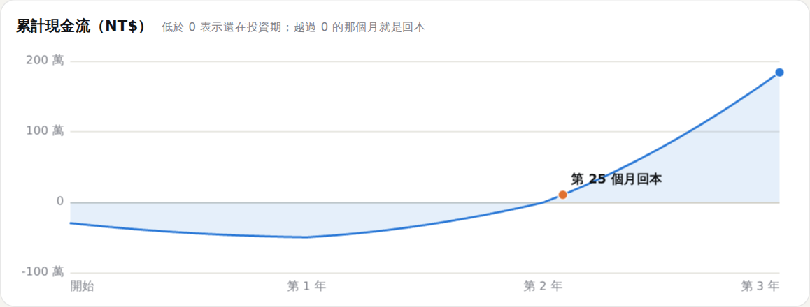
| 情境 | 回本 | 第三年底 ARR | 三年累計淨現金 |
|---|---|---|---|
| 預設（通路分潤 10%） | 第 25 個月 | NT$340 萬 | NT$184 萬 |
| 全部直銷（分潤 0%） | 第 23 個月 | NT$378 萬 | NT$227 萬 |
| 月費降到 NT$1,800 | 第 29 個月 | NT$245 萬 | NT$75 萬 |
| 續約率降到 75% | 第 25 個月 | NT$288 萬 | NT$156 萬 |
| 第一年只有 10 個入口 | 三年內未回本 | NT$170 萬 | −NT$13 萬 |
月費和入口數量是影響最大的兩個參數，所以第 2 階段一定要驗證客戶的付費意願，並先從既有案場累積入口數。
每天巡檢入口 16 次、每次 6 分鐘，改成「有需要才去」後減少一半：一年省下約 292 小時、NT$6 萬 人力；扣掉年訂閱費 NT$3 萬，客戶還省約 NT$3 萬。這還沒算滑倒理賠、WELL／LEED 維護紀錄，以及智慧建築標章加分的價值。
第 11 章
每一個風險都有對策，也都有辦法先用小錢驗證。
| 風險 | 對策 | 怎麼驗證 |
|---|---|---|
| 訊號被鋁框、混凝土擋住 | 非金屬天線窗；920 MHz LoRa 穿透力好；閘道器放在大廳 | 第 0 階段第一週實測訊號強度 |
| 泥水、清潔劑、踩踏 | 胎壓計等級灌膠，IP68＋IP69K；模組放在邊框端、不在踩踏面 | 浸水、沖洗、荷重測試各做一輪 |
| 電池撐不久 | 平常睡眠，壓電被踩到才喚醒；數據累積後批次上傳 | 實測平均電流，推算電池壽命 |
| 積砂量很難直接量 | 地墊是軟的、底下只剩約 2 mm，不能秤重；改用模型為主、清坑秤重校正、電容電極輔助 | 試點時每次清坑秤砂，跟模型比對 |
| 客戶不買單 | 先找既有的好客戶免費試用 3 個月，用數據說服 | 試點轉付費率 ≥ 30% |
| 地墊沒有法規強制保養 | 綁進物業、清潔、交屋合約；主打滑倒責任的舉證紀錄 | 跟 2 家物業公司談出分潤條件 |
| 無線頻段與 NCC | 用 920–925 MHz 或 BLE，不用 433 MHz；選已取得 NCC 的模組 | 下單前查 NCC 型號 |
| 補助時程 | SBIR 送件到撥款約 4–6 個月，要先墊款；第 0 階段不依賴補助 | 第 3–6 週送件 |
| 影響本業 | 分階段、小額投入；每階段都用數字決定要不要繼續 | 每月一次進度報告 |
| LINE 訊息費用 | 只推播重要警報給負責的人；查詢用免費回覆；Email 備援 | 每入口每月推播 < 20 則 |
第 12 章
不用一次押大注，只要讓我們先走第一步。
我負責的：每週五一頁進度，每月一次報告，用數字說話；第 4 週和第 13 週的決定點，都由爸爸決定要不要繼續。
阿里山的日出，要先爬上去才看得到。
附錄 A
| 原提案 | 修正 | 原因 |
|---|---|---|
| LINE Notify 推播 | LINE 官方帳號 Messaging API | LINE Notify 已在 2025/3/31 停止服務 |
| Cintas 式「租地墊＋每週換洗物流」 | 「監測＋凹槽清潔＋毯條更換」訂閱 | 易潔寶是固定安裝的鋁合金地墊，會消耗的是毯條和凹槽積砂 |
| FSR402 單點壓力感測 | 壓電感測底座條＋凹槽電極＋積砂模型 | FSR402 直徑只有 12.7 mm，蓋不住鋁條 |
| （初版）四角荷重元秤積砂 | 模型＋清坑秤重校正，電容電極輔助 | 地墊是軟的、底下只剩約 2 mm；溫漂比積砂重量大 |
| ESP32 直接連大樓 Wi-Fi | 920 MHz LoRa／BLE 傳到閘道器 | 大廳 Wi-Fi 常常不能用；鋁框會擋訊號 |
| 財務段有缺字與矛盾 | 重新建立可調整的試算模型（第 10 章） | 數字必須經得起推敲 |
附錄 B
| 項目 | 內容 |
|---|---|
| 公司 | 必買企業有限公司（易潔寶®），SINCE 2002 |
| 網路 | 官網 178mat.com（Blogger，約 404 篇案例，2026/9 仍在更新）；YouTube @178mat 約 65 支影片；主要用 LINE、電話接洽 |
| 面料 | 荷蘭 VEBE：Calypso 浪花紋、Metal 直條紋、Novanop 防焰；PVC 止滑膠條（台灣製） |
| 收邊框 | AL-620、FL-620、AR-502、AI319 等；佈局代碼 A–D 系列 |
| 數位／IoT／訂閱 | 目前沒有 |
| 台灣同業 | 重點 |
|---|---|
| 甜心牌 | 單元高 20 mm；案例有台北 101、台中高鐵站 |
| 麗合企業 | 3M 地墊特約代理，自製 3M 鋁框地墊 |
| 東強、喬城、地墊達人、梅雅、安達利 | 都有鋁合金地墊產品 |
| 結論 | 以上同業目前都沒有做 IoT |
| 國際前例 | 做法 |
|---|---|
| SensFloor（德） | 地板下的電容式感測織物；照護套房約 €3,000–3,500 |
| Scanalytics（美） | 壓力感測墊人流分析；已被 East West 併購 |
| Tarkett FloorInMotion | 地板下的壓電感測，偵測跌倒 |
| Sensing Tex（西） | 入口織物壓力墊，匿名計算人數 |
| Cintas、Lindström | 地墊租洗訂閱，沒有 IoT |
附錄 C
| 項目 | 方法 | 過關標準 |
|---|---|---|
| 每步電壓 | 示波器量 PVDF 膜在 ES302 底座條內的輸出 | 大於比較器門檻的 3 倍 |
| 計步準確度 | 公司門口放一週，錄影人工計數 | 單排通過誤差 < 5% |
| 方向 | 同上 | 正確率 > 95% |
| 推車辨識 | 推車、輪椅、手推車各 50 次 | 誤計人次 < 5% |
| 熱電誤觸發 | 鋁條加熱到 70°C 後用冷水沖 | 清洗模式判斷成功 |
| 電容電極 | 倒入 50／100／200 g 乾砂 | 可以分辨 |
| 積水電極 | 注水到 1／5／10 mm | 三段都正確 |
| 無線 | 蓋上鋁框，在大廳、地下室量 RSSI | 閘道器收得到，有 ≥ 10 dB 餘量 |
| 電池 | 功耗儀量一整天的平均電流 | < 15 µA |
| 密封 | 浸水 1.5 m、7 天；高壓沖洗 | 模組內濕度沒有上升 |
附錄 D
財務與模擬數字都是示意假設，不代表實際營運數據。估算值在第 0、1 階段要換成實測數字。